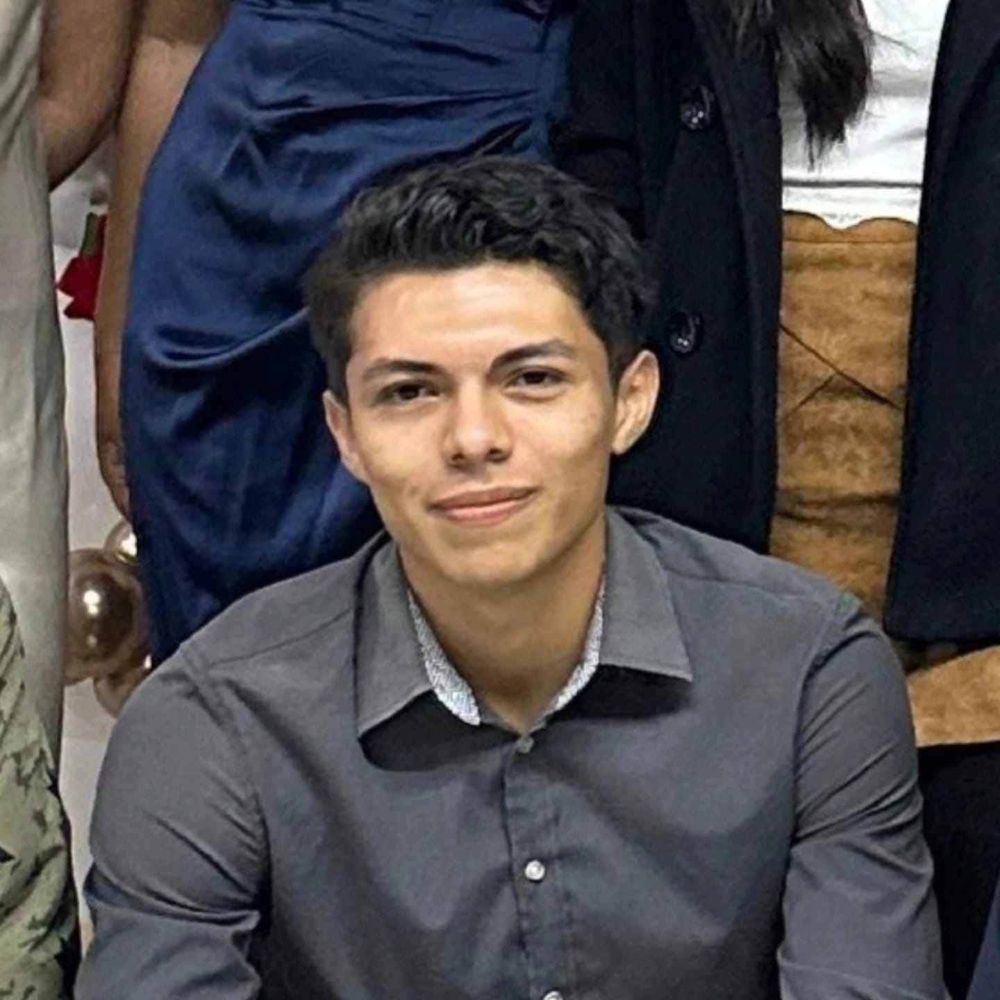

My resume Nomar Arcadia Chavez

Summary
I am a focus, calm and responsible person that always work hard
Education
- Escuela secundaria Emiliano Zapata
- Bachiller en Salud - Unidad academica preparatoria No. 1
- Universidad politecnica del estado de Nayarit
Work experience
Knowledge in crops and harvests
For more that 8 years
- I have been related in the process of harvest of cain and milpa
- I have done the quality certification of the product
- I have worked leading a team of reapers
part time nurse
2 years of experience
- I have worked taking care of old people
Skills
- Adaptability
- Physical stamina
- polyglot
- Python
Awards and certifications
- Fast videogame programming (2020)
- Contacted by cicada 3301 (2021)
Other